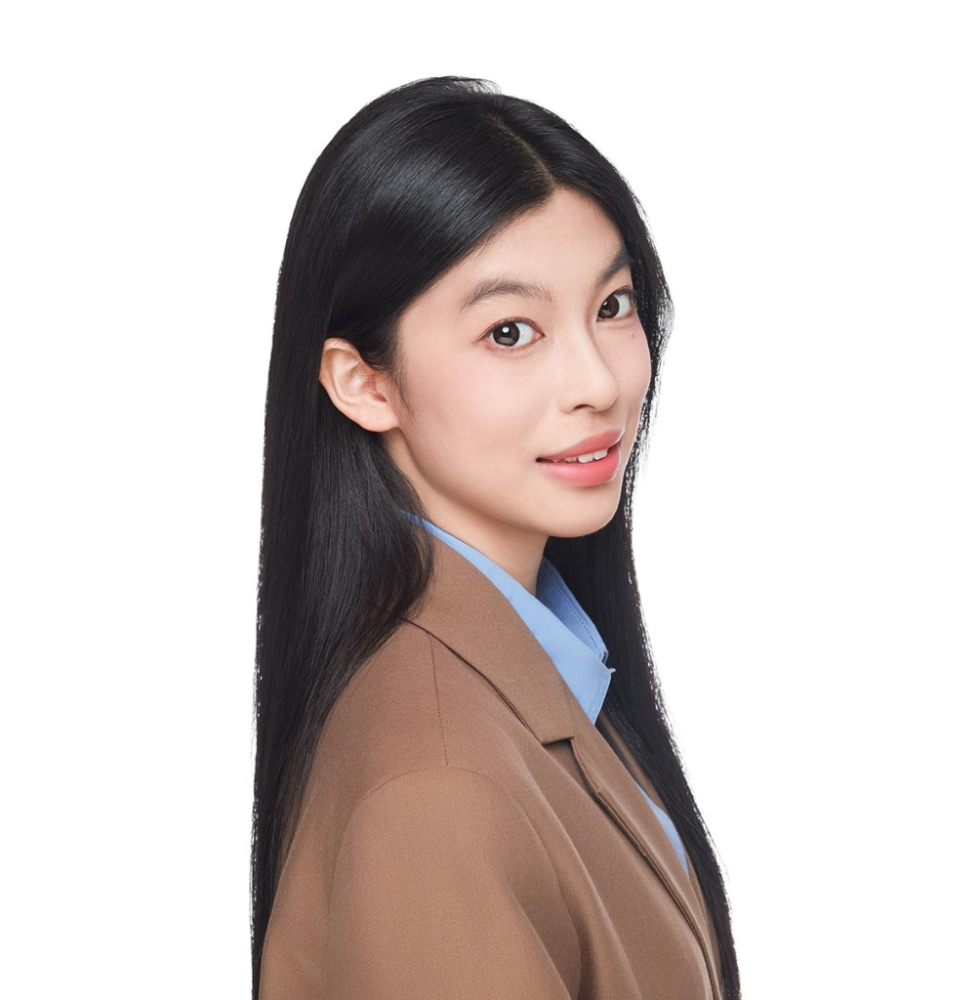

Shen Yi

Visual design · Animation · Creative direction
Hi, I'm Shen—thanks for stopping by. I'm a visual designer and animator who enjoys turning messy ideas into clear, memorable visuals. Whether it's motion, branding, or interface work, I like staying close to the full journey from first sketch to final delivery, so the story feels coherent and honest end to end.
I'm pursuing a B.A. in Animation at Tongji University (2022—2026). I ranked first in my major's comprehensive assessment for 2023—2024 and hold a GPA of 4.71 / 5.0. I've received the Tongji Undergraduate Excellence Scholarship in both 2023 and 2024 (First and Second Prize).
Seven national-level awards, six provincial-level awards, two national university student innovation programs, and two silver awards at Tongji's "Internet+" competition round out the track record I'm proudest of so far.
I interned at Tencent CDG — Tencent Advertising as a Visual Design Intern, working on B2B-facing AI agent platforms. I partnered with product and engineering to clarify complex automation for enterprise users—translating capabilities into layouts, components, and guidelines that stay consistent while scaling, and helping AI-assisted workflows feel legible rather than intimidating.
Participating Projects
-
Tongji University anniversary film Blazing Path 《炽途》
Led technical exploration for this anniversary promotional film—connecting 3D scanning with particle-based workflows, stress-testing multiple implementation paths, and packaging clear documentation so the team could iterate with confidence.
-
Graduation showcase: channel growth & onsite operations
Owned content planning and publishing for the program's official WeChat account, significantly boosting reach and audience engagement; supported the screening exhibition with venue circulation, guest reception, and cross-team coordination for a seamless end-to-end experience.
-
Regional tourism film — creative direction from pitch to schedule
Led the creative proposal and early storyboarding for a Jingdezhen tourism promotional piece during the Tongji phase, aligning collaborators and production timelines so delivery stayed on track without sacrificing narrative clarity.
-
Product hero visuals for a flagship tech spot
Built high-precision hero models in Cinema 4D for Acer's "Time Capsule" campaign, pushing materials and lighting until the products read premium, precise, and believable on screen.
-
48-hour timed competition sprint: VFX, identity, and packaging in one run
Competed in a national 48-hour timed jam (live clock): directed a compact team through live-action VFX, event key art, IP character design, group VI, and two packaging concepts—earning multiple national awards in a major art and design competition.
-
Director, red culture series The Chinese Spirit 《中国精神》 — Tongji College of Arts and Media
Directed the College of Arts and Media's red culture promotional video series—setting the creative through-line, guiding episodic storytelling, and aligning production with the school's campaign goals.
Major Personal Works
-
Hypertrace (《超维足迹》)
A modular rigging study for quadruped robots—layered bone hierarchies, inverse kinematics chains, and a hybrid FK / IK system that keeps mechanical motion controllable at every level.
-
Empty Mountain (《空山》)
An experimental stop-motion workflow that fuses in-camera performance with 3D digital motion, plus a cross-media asset library that keeps plates, meshes, and references organized across disciplines.
-
Future Echo (《未来残响》)
Full worldbuilding visualization and an end-to-end pipeline that jumps across DCC tools without losing continuity—from look development to final game-ready presentation.
-
Twenty-Four Solar Terms × Classic of Mountains and Seas (《二十四节气山海经》)
3D visual development for an IP-driven designer-toy line, translating mythic motifs into collectible forms, materials, and render-ready hero assets.
-
The Chinese Spirit series (《中国精神》)
Series-level production coordination for MG animation—balancing creative throughput with distribution strategy to grow reach on new media channels.
-
The Mirror
An independent 3D animated short that leans on physics-aware, cartoon-style shading to keep stylized lighting believable and expressive from shot to shot.
Skills
3D & animation
Cinema 4D · Octane · Maya · 3ds Max · ZBrush · Substance Painter · PFTrack
Compositing & editorial
After Effects · Media Encoder · Premiere Pro · CapCut
Design & AIGC
Figma · Photoshop · Illustrator · Lovart · Stable Diffusion · Midjourney · Comfy UI
Other
CET-6 English · Office suite